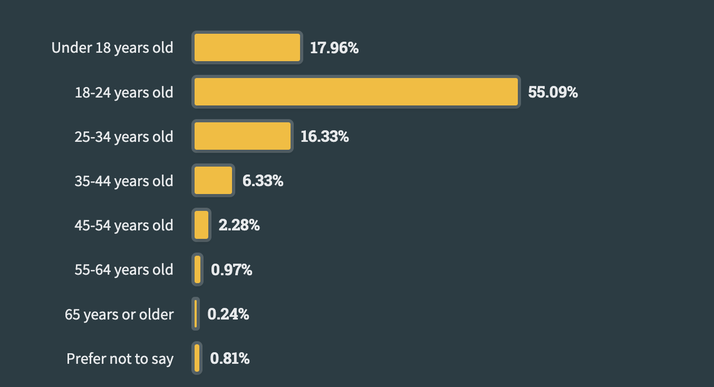
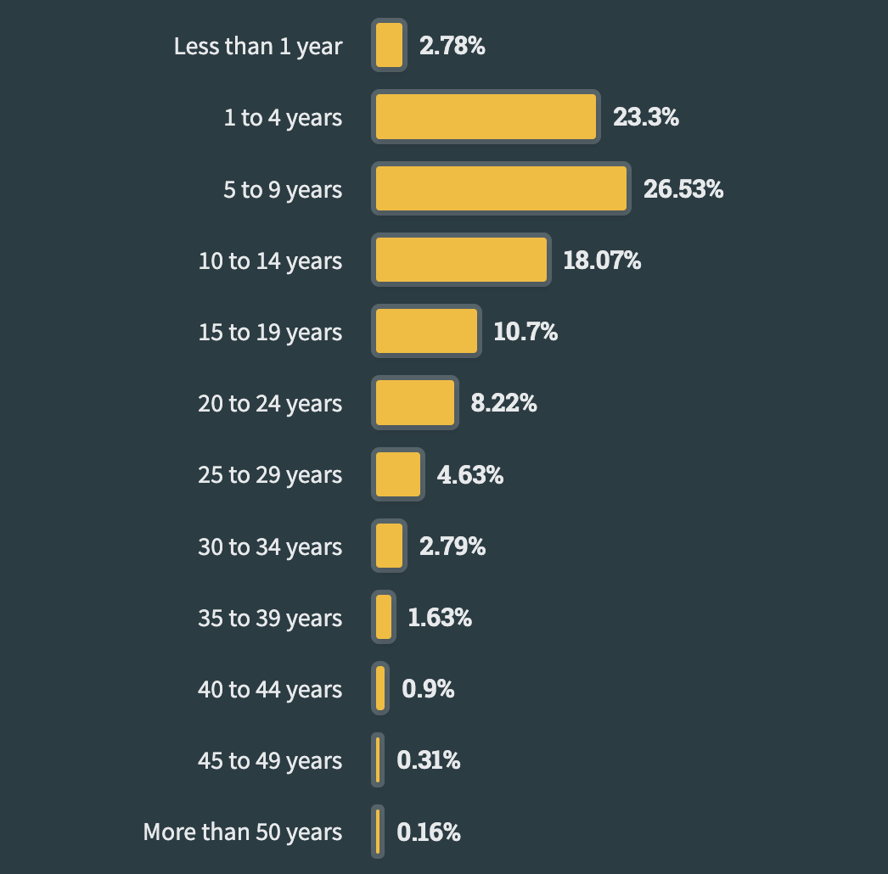

مقدمه
توی سالهای اخیر، نیاز به تخصص کامپیوتر و به طور خاص برنامهنویسی نسبت به قبل خیلی بیشتر شده. در همین راستا رشته مهندسی/علوم کامپیوتر به یکی از محبوبترین رشتهها تبدیل شد و دانشجوهای بقیه رشتههای مهندسی و غیرمهندسی هم برای متمایز شدن از رقیبهاشون، احساس کردن نیاز به یادگیری برنامهنویسی دارن. این روند به افراد با تجربههای حرفهای در زمینههای مختلف هم رسید و بعضاً این گروه هم تصمیم به یادگیری برنامهنویسی میگیرن. اما هر چی سن بیشتر میشه، سوالهای زیر هم پررنگتر میشه:
- من الان X سالمه. برای شروع یادگیری برنامهنویسی خیلی دیر نیست؟
- آیا شانس رقابت با افرادی که از سنین پایین برنامهنویسی رو یاد گرفتن و کار میکنن وجود داره؟
- درسته که میگن هرچی سن بالاتر میره یادگیری برنامهنویسی سختتر میشه؟
- برای این که وارد بازار کار برنامهنویسی بشیم، خوبه که از چند سالگی شروع کنیم؟
- آیا درسته که شرکتها برنامهنویسهای مسنتر رو استخدام نمیکنن؟
برای جواب دادن به این سوالها ابتدا مقداری آمار رو مشاهده میکنیم و سپس ابعاد مختلف شروع برنامهنویسی در سنین بالاتر رو بررسی میکنیم تا در نهایت بتونیم به جمعبندی دقیقتری برسیم.
بررسی آمار
سایت stackoverflow هر سال یک گزارش جامع از برنامهنویسها و دنیای برنامهنویسی منتشر میکنه که ابعاد مختلف این رشته رو پوشش میده. یک بخش این گزارش وضعیت سنی برنامهنویسها رو بررسی میکنه. طبق گزارش سال ۲۰۲۳، حدود ۱۸ درصد برنامهنویسها، یادگیری برنامهنویسی رو در سنین پایینتر و قبل از ۱۸ سالگی شروع کردن. این آمار برای افراد بین ۱۸ تا ۲۴ سال حدود ۵۵ درصد و افراد بین ۲۵ تا ۳۴ سال ۱۶ درصد است. جالبه که ۶ درصد برنامهنویسها بین ۳۵ تا ۴۴ برنامهنویسی رو شروع کردن. بعد از این سن هم مجموعاً ۳ درصد رو شامل میشه.

همونطور که میبینیم، درصد زیادی از برنامهنویسها از سنین کمتر و قبل از ۲۴ سالگی شروع به برنامه نویسی کردن (حدود ۷۳ درصد)، اما درصد قابل توجهی هم بعد از ۲۵ سالگی اولین خطهای کدشون رو نوشتن (حدود ۲۶ درصد).
یک نمودار دیگری که اگر در کنار نمودار بالایی بگذاریم شاید دید بهتری بهمون بده، نمودار میانگین سالهای سابقهٔ حرفهای برنامهنویسهاییه که در این حوزه مشغول به کارن. طبق این آمار حدود ۵۰ درصد برنامهنویسها کمتر از ۹ سال و ۵۰ درصد هم بالای ۹ سال سابقهٔ کاری دارن. جالبه که ۲۵ درصد برنامهنویسهایی که مشغول به کارن زیر ۴ سال سابقه دارن.

این آمار نشون میده که به همون اندازهای که برنامهنویسهای با سابقه بالا مشغول به کارن، برنامهنویسهای با سابقه کمتر هم شانس پیدا کردن کار در شرکتهای تکنولوژی محور رو دارن.
نکتهٔ مهم: مخاطب این پرسشنامه برنامهنویسهایی از سراسر دنیا بودن و به همین دارای سوگیریهای مربوط به موقعیتهای جغرافیایی است و این آمار در ایران میتونه متفاوت باشه.
آیا واقعا سن برای شروع برنامهنویسی مهمه؟
طبق آمارها میبینیم که افراد زیادی در سنین بالاتر به برنامهنویسی شروع کردن. پس آیا میشه گفت واقعا سن مهم نیست؟ برای جواب به این سؤال ابتدا جوانب مختلفی رو بررسی میکنیم.
ترس از دیر شروع کردن
افراد با بالا رفتن سن عموماً محافظهکار تر میشن. ترس از شکست و شروع دوباره در بین این افراد پررنگتره؛ در عوض افرادی که سنین پایینتری دارن، هزینهٔ کمتری برای شکست خوردن و شروع دوباره میپردازن. این که ۴۰ ساله باشی و تازه بخوای یک مسیر شغلی جدید رو شروع کنی ممکنه برای بعضیها ترسناک باشه. این موضوع با وجود این که واقعیت داره اما همهٔ ماجرا نیست. فردی که سنین بالاتری داره احتمالاً اندوخته و تجربهٔ بیشتری در زمینههای مختلف و مقابله با چالشها داره. تجربهها و دانشی که تا این سن به دست اومده، به خصوص مهارتهای نرم، میتونه نقطه قوتی باشه که فرد رو نسبت به افراد تازه کار جلو متمایز کنه. برای مثال فردی که مهارت تدریس خوبی داره، با یادگیری برنامهنویسی میتونه بهتر به تدریس این کار بپردازه. فردی که سابقه مدیریت داره، با داشتن مهارت برنامهنویسی میتونه مدیر بهتری در شرکتهای تکنولوژی محور باشه و درک بهتری از محصولی میسازن داشته باشه. یا فردی که تجربهٔ کار با کودکان داره، دنیای ارتباط با کودکان رو بهتر میشناسه و راحتتر میتونه به کودکان برنامهنویسی یاد بده. پس دیر شروع کردن با وجود معایبی که داره، میتونه در زمینههای دیگری مزیت محسوب بشه.
سنگرایی در استخدام (agism)
ابتدا یک تعریف واحد از سنگرایی داشته باشیم. ویکیپدیای فارسی سنگرایی رو به این صورت تعریف میکنه:
سنگرایی یا گاهی تبعیض سنی (به انگلیسی: ageism) به کلیشهسازی یا تبعیض علیه یک فرد یا گروه به دلیل سنی گفته میشود. سنگرایی همچنین مجموعهای از باورها، هنجارها و ارزشهایی است که برای توجیهِ تبعیض بر اساس سن فرد به کار میرود.
طبق این تعریف، سنگرایی در دنیای استخدام به این معنیه که برای یک فرصت شغلی یکسان، یک فرد با ۲۰ سال سن استخدام بشه اما همون فرد با دانش یکسان و با داشتن ۴۰ سال سن استخدام نشه. در این بخش یک فرد رو مسن در نظر میگیریم که سنش به میزان قابل توجهی از هم ردههاش بیشتر باشه. برای مثال در یک تیمی که همگی حدود ۲۰ سال سن دارن، یک فرد ۴۰ ساله مسن محسوب میشه اما در تیمی که همه ۵۰ سال سن دارن کمسن به حساب میشه.
قانون کار در خیلی از کشورها در مقابل سنگرایی مقابله میکنه. اما طبق تجربهٔ من، متأسفانه سنگرایی در زمینهٔ کارهای مربوط مهندسی نرمافزار و برنامهنویسی وجود داره. این تبعیض خودش رو به چند روش نشون میده. بعضی از شرکتها به صورت واضحی در آگهیهای استخدام شرایط سنی رو مشخص میکنن. برای مثال مینویسن که فقط افراد زیر ۳۰ سال فرم مصاحبه رو پر کنن. در برخی از دیگر شرکتها یک نسخهٔ متعادلتری از سنگرایی وجود داره. به این صورت که تنها در صورتی افراد با سنین بالاتر رو استخدام میکنن که اون فرد بتونه ارزشی برای اون شرکت خلق کنه که افراد با سنین پایینتر نمیتونن خلق کنن. اتفاقاً این شرکتها خیلی خوشحالتر میشن که افراد با سن بالاتر و باتجربهتر رو استخدام کنن ولی فقط به شرط داشتن دانش و تجربه زیاد.
یک مورد دیگه هم خوبه اشاره کنم اینه که میانگین سنی افراد در حوزههای کاری مختلف متفاوته. برای مثال نقشهای مدیریتی عموماً میانگین سنی خیلی بالاتری نسبت به نقشهای مربوط به توسعهٔ کد دارن.
به طور خلاصه سنگرایی به صورت سیستماتیک در شرکتها وجود داره و افراد با سنین بالاتر احتمالا باید ارزشمندی بیشتری از خودشون نشون بدن تا استخدام شن. اما این مورد شرکت به شرکت، کشور به کشور و نقش به نقش متفاوته. اگر دوست دارید بیشتر در مورد این موضوع بخونید این مقاله رو پیشنهاد میکنم.
وابستگیهای زندگی شخصی و کاری
با بالا رفتن سن عموماً وابستگیهایی مثل خانواده، بچه و یا حتی شغل قبلی زیاد میشه. این مسئله باعث میشه که فرد نسبت به یک دانشجو، وقت و تمرکز کمتری برای کار کردن و به خصوص شروع به کار کردن داشته باشه. پیشرفت کردن و ساختن مهارت در برنامهنویسی، مثل بیشتر کارهای دیگه، نیاز به وقت گذاشتن و تمرکز زیادی داره. حتی اگر فردی ۱۸ سالش باشه و همزمان با یادگیری برنامهنویسی مسئولیتهای خیلی زیادی داشته باشه، فرآیند رشدش خیلی کندتر پیش میره. به همین دلیل افرادی که یک شغل تماموقت دارن و میخوان همزمان برنامهنویسی رو شروع کنن، احتمالاً به کندی پیشرفت میکنن و ممکنه سرخورده بشن. برعکس، اگر زمان و تمرکز خوبی در ابتدای کار گذاشته بشه، فرد از پیشرفت خودش لذت میبره و هر روز به کاری که میکنه بیشتر علاقهمند میشه.
نتیجهگیری
طبق آمارهایی که نشون داده شد و همچنین جوانب مختلفی که برای شروع برنامهنویسی بررسی کردیم، میبینیم که سن برای شروع برنامهنویسی و پیدا کردن کار بیتأثیر نیست ولی تاثیرش خیلی کمرنگتر از علاقه فرد، میزان زمان و تمرکزی که برای ساختن این مهارت میذاره داره. شرکتها فردی که تجربه و دانش کافی برای حل مسائل و چالشهاش رو داره، مستقل از سن، به سختی میتونه استخدام نکنه. پس میشه گفت اگر به این کار علاقه دارین و میتونین وقت کافی بذارین، این مسیر شغلی میتونه مناسب شما باشه. اگر هم در حال حاضر به کارهای دیگری مشغولین و برنامه دارین فقط چند ساعت در آخر هفته برای این کار وقت بذارین، احتمالا تغییر مسیر شغلی موفقی نخواهید داشت و میتونید یادگیری برنامهنویسی رو دیدهٔ یک مهارت جانبی نگاه کنید.
اگر تجربهای در این زمینه دارید خوشحال میشم نظرتون رو بنویسید.
در هر صورت اگر تصمیم به شروع برنامه نویسی در سن بالا گرفتین، میتونین بقیهٔ نوشتههای مجموعهٔ شروع برنامهنویسی رو هم یک نگاهی بیندازین. اگر هم سوال یا دغدغه بیشتری دارین میتونین با ایمیلی که در قسمت دربارهٔ من گذاشتم باهام در ارتباط باشین و بیشتر در مورد شرایط شما صحبت کنیم.